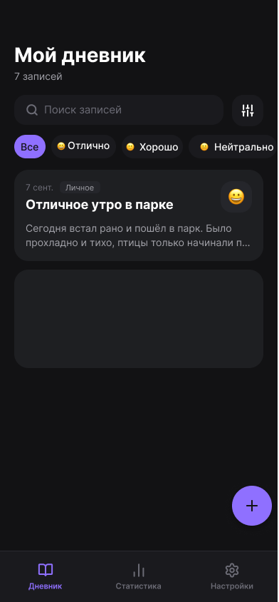
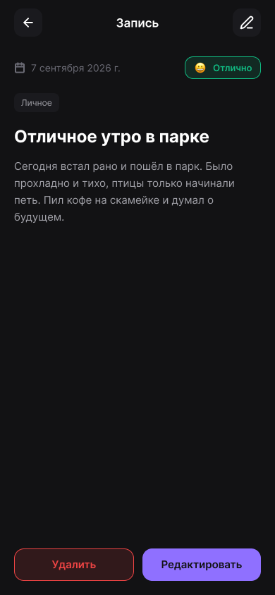
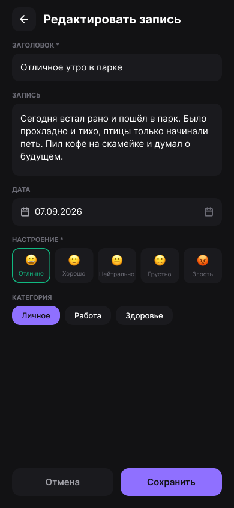
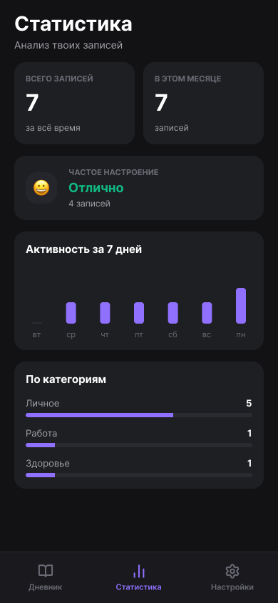
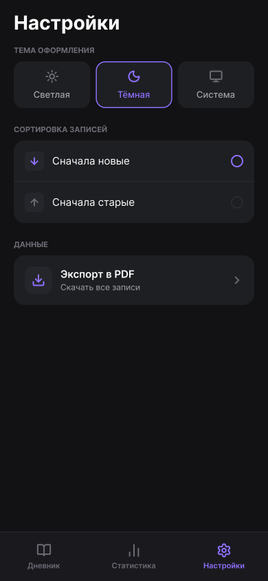

Приложение для Android, где можно записывать свои мысли и отмечать настроение.
Бывает, хочется записать, как прошёл день, но блокнот неудобно носить с собой. Для этого и есть приложение «Дневник»: пишешь запись, выбираешь настроение (от «Отлично» до «Злость»), а потом смотришь статистику — каких дней было больше.

Главный экран
Просмотр записи
Редактирование
Статистика
НастройкиМожно найти любую запись по слову из заголовка или текста. Например, по слову «парк» найдётся и «в парке», и «Парковка». Найденные слова подсвечиваются.
Все записи можно сохранить одним PDF-файлом — чтобы распечатать или сохранить себе на компьютер, если что-то случится с телефоном.
Регистрация не нужна, все записи хранятся только на телефоне.
Нужен телефон с Android 7.0 или новее. Скачайте APK-файл со страницы проекта на GitHub и установите его (может понадобиться разрешить установку из неизвестных источников).